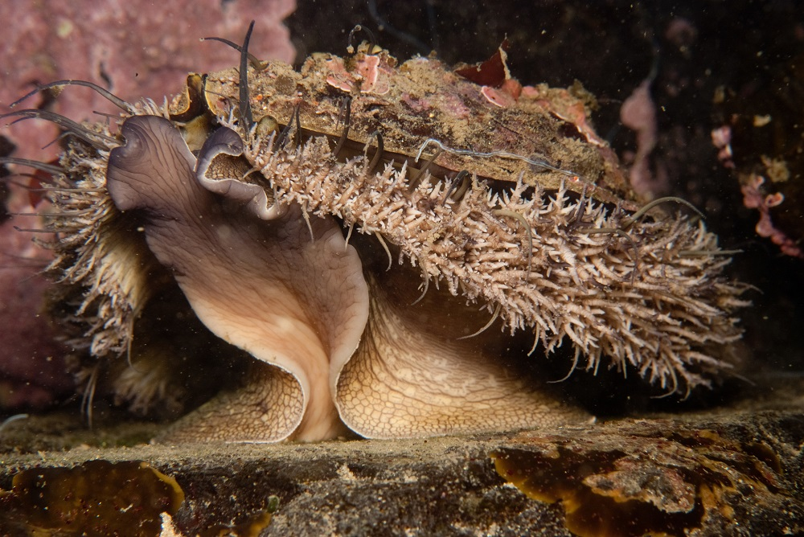
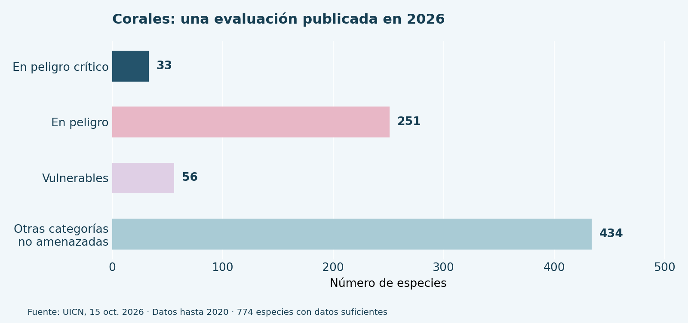

Resumen
La contaminación marina deteriora los hábitats y se combina con el calentamiento y la explotación de recursos para amenazar la biodiversidad. Este trabajo examina evidencias disponibles hasta octubre de 2026 mediante una revisión documental de cinco fuentes institucionales. Se compararon mecanismos de daño, grupos afectados y fechas de las evaluaciones. Los resultados identifican riesgos asociados con residuos plásticos, exceso de nutrientes y perturbación del fondo oceánico, junto con una elevada amenaza para los corales. Se concluye que prevenir vertidos y proteger hábitats son medidas complementarias. Las cifras describen evaluaciones específicas y no un recuento de especies extinguidas durante 2026.
Palabras clave: biodiversidad; conservación; contaminación; ecosistemas marinos; especies amenazadas
I. Introducción
La pérdida de biodiversidad marina compromete refugios, cadenas alimentarias y recursos costeros. El PNUMA documenta daños por basura y plásticos desde las fuentes terrestres hasta el océano [1]. El objetivo es analizar la relación entre contaminación y deterioro de especies mediante evidencia disponible al 19 de octubre de 2026, distinguiendo amenazas actuales de extinciones confirmadas.
II. Marco teórico
Amenaza no equivale a extinción
Una especie amenazada enfrenta riesgo de desaparición, pero no necesariamente ha desaparecido. La UICN informó en octubre de 2026 que 340 de 774 especies de corales con datos suficientes estaban amenazadas, aproximadamente el 44 %. La evaluación utilizó datos hasta 2020; el calentamiento fue la amenaza principal [2].
Daños acumulativos
La actualización de julio de 2026 identificó 125 de 201 moluscos endémicos de fuentes hidrotermales amenazados por minería submarina; las plumas de sedimentos afectan su respiración y alimentación [3]. En zonas costeras, los nutrientes excesivos favorecen proliferaciones de algas y condiciones de poco oxígeno, capaces de matar peces [4]. Estos procesos tienen causas diferentes y pueden coincidir.
III. Metodología o desarrollo
Se realizó una revisión documental con páginas oficiales, un navegador y un script de cálculo para organizar los datos, sin muestreo de campo:
- Consultar cinco publicaciones del PNUMA, la UICN y NOAA.
- Registrar fecha, grupo biológico y mecanismo de daño.
- Separar datos históricos de actualizaciones publicadas en 2026.
- Comparar resultados y elaborar una tabla y una gráfica descriptivas.
Las categorías de análisis fueron:
- Contaminación por residuos y nutrientes.
- Pérdida de hábitats y riesgo de extinción.
Como antecedente, la UICN señaló en 2022 que escorrentías agrícolas e industriales favorecieron proliferaciones algales que eliminaron al abulón omaní de la mitad de su distribución [5].

IV. Resultados y discusión
| Presión | Resultado documentado | Fuente |
|---|---|---|
| Basura plástica | Daño a fauna y ecosistemas | PNUMA, 2021 [1] |
| Calentamiento | 340 corales amenazados de 774 con datos suficientes | UICN, 2026 [2] |
| Minería submarina | 125 moluscos amenazados de 201 endémicos evaluados | UICN, 2026 [3] |
| Exceso de nutrientes | Hipoxia y mortalidad de peces | NOAA, 2026 [4] |
Los resultados no deben sumarse: corresponden a grupos, indicadores y periodos distintos. Tampoco atribuyen toda la pérdida marina a contaminación; el clima y la explotación también intervienen. La revisión no permite calcular cuántas especies desaparecieron durante 2026 ni describir específicamente las costas salvadoreñas.

V. Conclusiones
El objetivo se cumplió al identificar vías documentadas de deterioro y sus límites. Reducir plásticos, tratar aguas residuales y proteger hábitats requiere acciones conjuntas. Se recomienda complementar esta revisión con monitoreo local y evaluaciones periódicas, evitando confundir riesgo de extinción con desaparición confirmada.
Referencias
- [1] PNUMA, “From Pollution to Solution: A Global Assessment of Marine Litter and Plastic Pollution”, Programa de las Naciones Unidas para el Medio Ambiente, 2021. [En línea]. Informe del PNUMA. [Consulta: 19-oct-2026].
- [2] UICN, “Nearly half of reef-building coral species face elevated relative risk of extinction”, Unión Internacional para la Conservación de la Naturaleza, 15 oct. 2026. [En línea]. Evaluación de corales. [Consulta: 19-oct-2026].
- [3] UICN, “From desert frog to deep-sea molluscs, remarkable species at risk – IUCN Red List”, Unión Internacional para la Conservación de la Naturaleza, 9 jul. 2026. [En línea]. Evaluación de moluscos. [Consulta: 19-oct-2026].
- [4] NOAA, “What is eutrophication?”, National Ocean Service, actualizado el 23 sep. 2026. [En línea]. Eutrofización costera. [Consulta: 19-oct-2026].
- [5] UICN, “Human activity devastating marine species from mammals to corals – IUCN Red List”, Unión Internacional para la Conservación de la Naturaleza, 9 dic. 2022. [En línea]. Amenazas a especies marinas. [Consulta: 19-oct-2026].